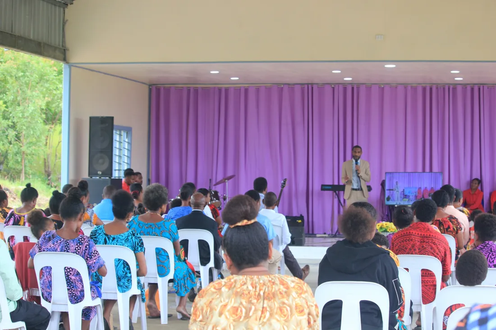
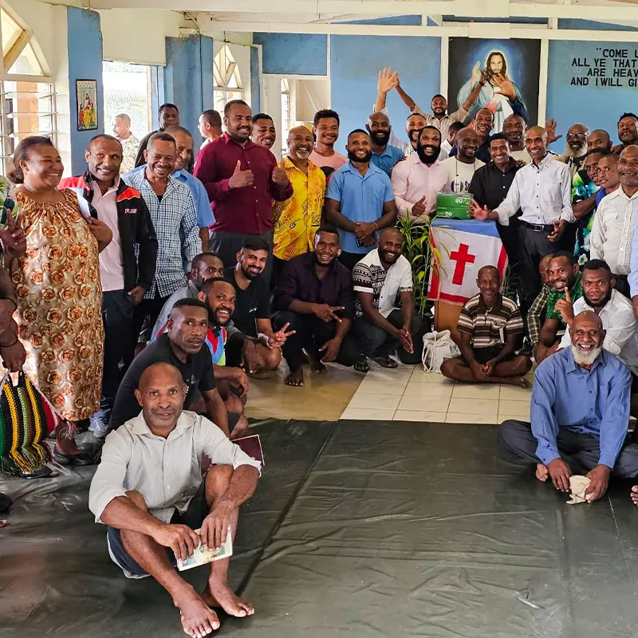
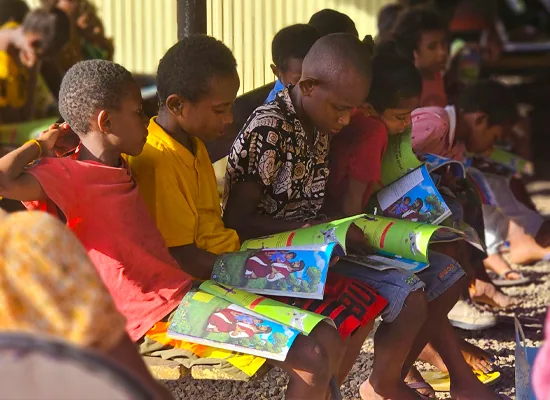
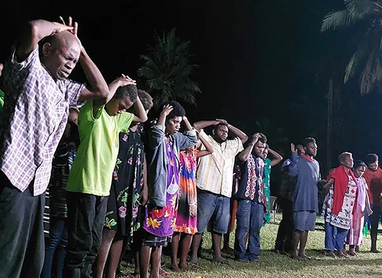

Gospel & discipleship
Worship and grow
Gather for prayer, biblical teaching and fellowship as we grow in faith and purpose.
Explore our ministry
Welcome to Voice of Truth
Every person is valuable to GOD.
From a youth gathering at ATS in November 2015 to our church home in Baruni Village, our heart remains the same: to align every soul to their God-given purpose.
We share the Gospel and serve through worship, discipleship, youth engagement, counselling and community outreach.
Read our storyFaith in action
Our faith is expressed through the way we worship, encourage and care for one another.

Gospel & discipleship
Gather for prayer, biblical teaching and fellowship as we grow in faith and purpose.
Explore our ministry
Youth & families
Helping young people discover their value, develop leadership and build stronger relationships.
Youth and community
Outreach & care
Sharing hope through village outreach, crusades, prison visitation and practical care.
Crusades and outreachBuilding toward restoration
A proposed centre in Baruni Village to help people rebuild their lives and move toward purpose.
Explore the projectA vision for people and community
Planned support includes counselling, rehabilitation, practical training and reintegration for people facing addiction, family breakdown and other challenges.
Land has been secured, with architectural and structural designs and construction costings prepared. The project requires funding to move toward construction.
Discuss project supportYou are welcome here
Join us at the Main Church Centre in Baruni Village every Sunday at 9:30 am, beginning with live praise and worship.
Plan Your VisitBaruni Village
Port Moresby, NCD
Papua New Guinea
Monthly Prayer & Fasting
A week of prayer and fasting at the beginning of every month. Contact our team for the dates and programme.
Our wider ministry family
Our ministry also has locations in Babiko, Popondetta, Kimbe and Lae.
Explore our outreach journeyMeet the people providing spiritual leadership and helping coordinate the work.
Meet our leadership